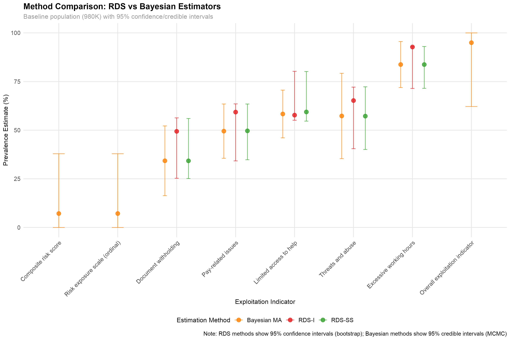

Quantifying Hidden Exploitation: Dual-Method Prevalence Estimates of Modern Slavery Risk Among UK Domestic Workers1
Abstract
Purpose
The purpose of this article is to demonstrate a quantitative approach to the construction of a risk index of labour exploitation and alternative estimators of the prevalence of exploitation.
Design/ Methodology/ Approach
Using data from a survey of domestic workers based in the United Kingdom (UK), we use statistical techniques, including Respondent Driven Sampling (RDS) methods RDS-I and RDS-II and Network Scale Up (NSUM) methods, to produce an index of labour exploitation risk and estimators of the prevalence of labour exploitation.
Findings
The labour exploitation risk index shows a reverse correlation between the increasing seriousness of exploitation and the number of exploitation cases reported. The various prevalence estimators examined show significant differences in population level exploitation.
Research implications/ limitations
Further research into the application of different quantitative statistical estimators of the prevalence of labour exploitation is urgently required.
Practical implications
Robust estimators are necessary if policy makers are to make informed choices about the appropriate allocation of scarce resources to help to eradicate severe forms of labour exploitation and labour abuse.
Social implications
Even by more conservative estimates, thousands of domestic workers in the UK are subject to labour exploitation. Urgent policy attention is needed if structural vulnerabilities are to be removed.
Originality
We believe this paper is the first to compare the use of RDS and NSUM methods in the quantitative estimation of the prevalence of labour exploitation and to construct a quantitative, composite index of labour exploitation risk.
Conceptualising Labour Exploitation and the Degree of Risk
Binary vs. continuous definitions.
Risk index construction and theoretical justification.
Modern slavery has been criticised by some for its overly extensive scope: encapsulating a broad range of divergent sub-categories of exploitation (O’Connell Davidson (2015); Gutierrez-Huerter O, Gold, and Trautrims (2023)). For this reason, we used the International Labour Organization’s (I.L.O. (2012)) ‘Indicators of Forced Labour’ to identify the potential for severe labour exploitation and as a basis for the quantification of our labour exploitation and abuse risk index. The ILO identify eleven indicators designed to help understand how forced labour arises and how it affects victims. These indicators include: abuse of vulnerability; deception; restriction of movement; isolation; physical and sexual violence; intimidation and threats; retention of identity documents; withholding of wages; debt bondage; abusive working and living conditions and excessive overtime. According to the ILO, the presence of a single indicator in any given situation may in some cases imply the existence of forced labour. However, it also suggests that in other cases it may be necessary to look for several indications which, taken together, may point to a case of forced labour. We seek to refine this statement through the construction of a composite index by which means a degree of risk related to the likelihood of a domestic worker experiencing this most severe form of exploitation may be distinguished from the likely occurrence of less severe, though similarly illegal, forms of labour abuse.
Evaluating the Degree of Risk
The study of risk management has a long tradition in operations and supply chain management. Initially, the risks under consideration were primarily related to ensuring continuity of the supply of goods and services (see for example, Jüttner, Peck, and Christopher (2003)). Beginning with Anderson (2006) and Anderson and Anderson (2009), however, a literature stream of sustainability-related supply chain risk management developed related specifically to the risks associated with the environment and social justice. A normative consensus related to the main stages of supply chain risk management has developed in the literature, with a five-stage sequential model typically presented. There have also been empirical studies of risk management within various industrial supply chains in the United States and India (Tarei, Thakkar, and Nag (2018); Dellana, Rowe, and Liao (2021)), including the quantification of a risk index for the petroleum supply chain (Tarei, Thakkar, and Nag (2018)). Yet, while these authors recognize the need for responsible management and its effect on societal values, in line with other literature in the field they view risk from the perspective of the corporate supply chain rather than examining the risk of harm to the worker.
In our study, we conceptualise the risk of labour exploitation from the workers’ perspective. We conceive severe forms of labour exploitation such as forced labour as one end of a spectrum ranging from illegal employment practices that constitute labour abuse, such as wage payments below legal minimum wage levels and health and safety violations, through to the likelihood of criminal exploitation recognized in the UK as modern slavery. Our assessment of this personal risk permits a degree of risk to be assigned to various clusters of forced labour indicators with the more indicators present, the stronger the likelihood that the working conditions may be considered exploitative. Our approach, therefore, includes, but goes beyond, assessing the likelihood of forced labour by simply quantifying the proportion of survivors entering the UK’s National Referral Mechanism (NRM): a government system for survivor support set up to identify whether there are positive grounds for the identification of Modern Slavery. In our method, an NRM referral is used as the strongest indicator of modern slavery risk, with lesser risks assessed according to the degree to which cumulative indicators of forced labour are reported.
Case Setting: Labour Exploitation Risk Among Transnational Migrant Domestic Workers In The UK
Domestic work forms part of a broader industrial category of Personal and Household Service work (PHS). Work in this category includes those employed in ‘social work activities without accommodation’ and ‘activities of households as employers of domestic personnel’ (European Commission (2012)). In 2017, an estimated 980,000 people were engaged in PHS work in the UK (Manoudi et al. (2018)). Manoudi et al. (2018) highlight that the PHS sector is dominated by women and migrants, with many undeclared foreign workers. Detailed statistics related to the country of origin of domestic workers migrating to work in PHS in the UK are difficult to isolate before 2019. Since that time, annual migration has fluctuated – falling sharply in 2021 due in part to the COVID-19 pandemic, before later rising again above pre-pandemic levels. In the year to December 2022, the UK Home Office reported that it had issued 18,533 Overseas Domestic Worker visas (Home Office (2023)). These domestic workers came from various countries in South America and Asia, including many from the Philippines.
In 2023, Strauss and Cocco (2023) reported a big shift in the source countries of migrants arriving in the UK on the Overseas Domestic Worker and other types of worker visas. Transnational domestic workers from the Philippines and India accounted for the single largest number of applications granted (10,186 and 3,858 visas respectively), followed by smaller, but still significant, numbers of workers arriving from Bangladesh (465), Nigeria (446), Sri Lanka (444), Egypt (422), and Ethiopia (285). In the same period, smaller numbers of visa applications to work as a domestic worker in the UK were also accepted from workers from other source countries including, but not limited to, the Sudan, Nepal, Ghana, Kenya, Lebanon, Eritrea, Iran, Turkey, Yemen, Malaysia, Thailand, and Morocco. This post-Brexit increase in the diversity of source countries from which transnational workers are drawn makes a more detailed analysis of the risk of labour exploitation in the sector both timely and more urgent.
There is a long history of reports of exploitation in the domestic work sector in the UK. In 2008, the civil society organisation Kalayaan, which was formed to campaign for the formal recognition of migrant domestic workers’ rights in the UK, reported on the impact of proposed changes to the UK immigration system on migrant domestic workers (Kalayaan (2008)). Their report highlights government recognition of documented and unacceptable levels of abuse and exploitation among domestic workers in the UK as early as 1996. At this stage, new policies, including the development of a specialised visa allowing domestic workers to change employer during their stay were introduced. However, in 2012, these visa conditions were modified, tying domestic workers to a single employer and restricting the length of time that they are permitted to remain in the country to a period of six months (Gower (2016)). Overseas domestic worker visa holders are now, again, permitted to change employers, but not to apply to renew their six-month long visa unless they receive a positive ‘Conclusive Grounds’ decision related to exploitation considered to be modern slavery through the UK’s National Referral Mechanism (NRM) (Romero and Fisher (2025)).
These reports highlight the underlying reasons for migrant domestic workers’ vulnerability, including workers’ relative desperation for work; their lack of social ties; unfamiliarity with English language and culture; long working hours; lack of knowledge of their legal rights; a lack of oversight of the private home as a workplace; their work forming part of the informal economy; their reliance on their employer for permission to work in the UK; and their lack of recourse to public funds. As a result, migrant domestic workers are vulnerable to abuse ranging from minor breaches of employment and health and safety law, to physical and sexual violence, slavery, forced labour and trafficking.
That these conditions may persist is evidenced by a report from another civil society organisation, the Latin American Women’s Rights Service, which describes the results from twelve in-depth interviews with Latin American domestic workers in the UK. This report depicts high levels of isolation, exploitation and abuse including a failure by employers to provide written contracts or payslips; breaches of verbal agreements; a requirement to perform different tasks from those indicated during recruitment; increasing working hours with little or no time off; excessive work days; a lack of paid holiday; many domestic workers not registered with a GP; sexual harassment in the workplace; verbal or physical abuse; employer surveillance; a lack of opportunity to change working conditions; isolation and fear of seeking help; and high reported levels of trafficking for labour exploitation (Latin American Women’s Rights Service (2023)).
Against this backdrop, we used respondent driven sampling (RDS) as a sampling technique to recruit and survey domestic workers in the UK about the working conditions they were experiencing to estimate the nature and scale of abuse and exploitation based upon reports of their conditions by domestic workers themselves.
Respondent-Driven Sampling (RDS) And Survey Method
Comprehensive descriptions and literature reviews of the development and use of RDS to estimate the population size of a hidden population are available elsewhere (Heckathorn (2011); Gile et al. (2018)). Suffice it to say, the possibilities of the use of a one-wave snowball sampling to allow researchers to obtain a sample of personal networks was posited by Frank and Snijders (1994). Following the identification of a set of original sample members known as seeds, Heckathorn (1997); Heckathorn (2002) advocate the use of a double incentive to recompense participants not only for their involvement, but also for their recruitment of further participants in subsequent ‘waves’ of participation by drawing upon the social ties through which members of the hidden population are connected to each other.
The typical number of original sample seeds is between two and ten: chosen as heterogeneously as possible (Gile et al. (2018)). Though they may be subject to both systematic and non-systematic errors, the use of snowballing methods for the study of hidden populations, with the support of monetary or symbolic rewards, has been advocated as a way of creating robust recruitment embodying diversity in characteristics such as ethnicity, gender and geographical location (Heckathorn (1997); Heckathorn (2002)). In these papers, Heckathorn advances the development of RDS to include self-reported network size as a population estimator and bootstrapping techniques to support the development of an estimator’s confidence intervals, an approach that has since been refined by others (Gile and Handcock (2015a)). Such developments derive a new class of indicators for the population mean and define a corresponding bootstrap method to estimate the errors in RDS. The resulting ‘network working model’ permits the individual’s connectedness in the network to be tested, while reducing bias with respect to the composition of the seeds. Snowball sampling is based upon the initial recruitment of the original sample selection by means of convenience. RDS also takes a non-random approach to seed selection, but relies upon the social network structure that exists between participants to produce a non-probabilistic sample (Goodman (2011)). Incentive structure is important—though this weakness is not a feature of our target hidden population, some researchers have identified that younger men with higher socio-economic status are less likely to participate (N. McCreesh et al. (2013)). Perhaps of more concern, RDS has been described as a risky strategy since researchers cannot be sure whether enough respondents have been recruited through subsequent waves to eliminate bias within the original sample members (Vincent and Thompson (2017)).
RDS has been widely used to sample a variety of hidden populations, including HIV prevalence, rape and client-initiated gender-based violence among sex workers (Nicky McCreesh et al. (2012); Schwitters, Swaminathan, and Serwadda (2012)). While the RDS method has proved limited when seeking to provide population heterogeneity by geographical location (N. McCreesh, Johnston, and Copas (2011)), where these population features are of lesser importance, such methods have been used successfully. RDS methods have been used to survey other migrant populations (Tyldum (2021)), while such network-based referrals have been described as the only viable method to reach many types of labour trafficking victims (Zhang (2012)) and have been used to research exploitation among low-wage workers in three American cities (Bernhardt, Milkman, and N. (2009)); a study of labour trafficking in migrant communities in the city of San Diego (Vincent and Thompson (2017)); examination of the worst forms of child labour in the Indian state of Bihar (Zhang et al. (2019)); and the commercial sexual exploitation of children in Nepal (Jordan et al. (2020)).
The survey instrument included modules on demographic and employment characteristics, social network size and composition, and indicators of labour exploitation. The exploitation indicators were based on the International Labour Organization’s framework of forced labour, adapted for the UK domestic work context. These indicators allowed us to operationalise exploitation in two ways. First, we constructed binary indicators classifying respondents as exploited or not exploited, based on threshold criteria. Second, we developed a continuous risk index, designed to capture gradations of vulnerability across the full sample.
In the following section, we describe our methods, including how we designed our survey, contacted our sample seeds, and analysed our data. Our approach can best be described as Web-based RDS (Wejnert and Heckathorn (2008)). We designed a web survey using the JISC online survey interface, suitable for our respondents to complete via a mobile phone. Composite measures to quantify the extent to which respondents were at risk of labour exploitation, including severe forms of exploitation such as forced labour, were constructed from existing exploitation typologies, notably the ILO’s Indicators (I.L.O. (2012)). The survey consisted of these 11 composite indicators and included questions related to domestic workers’ level of job satisfaction, employment conditions, and demographic data such as nationality, age, and gender. The main survey was conducted in the five months between February and July 2023.
Initial Sample Selection
We selected our first wave of participants nonrandomly by convenience sampling. Mobile phone numbers were used both to identify seed participants and to act as a unique identifier for those whom they referred. To avoid sample homophily, original sample members were selected from three distinct domestic worker communities. This was facilitated by civil society organisations who represented distinct domestic worker communities. One was an exclusively online community of transnational domestic workers working in the UK, the second represented UK domestic workers of Filipino origin, and the third drew its membership from the Latin American community of domestic workers, also in the UK. Along with other academics with expertise in exploitation within domestic work, representatives from these three organisations also contributed to survey question design and facilitated the piloting of an initial version of the survey (which was translated and made available in four languages: English, Spanish, Tagalog, and Portuguese) to selected domestic workers within each community.
Survey Incentives: Incentive Design and Participation Verification
A double incentive scheme rewarded respondents both for completing the questionnaire and for each referral who went on to engage with the survey. The challenge of incentive design is to set the incentive at a level that adequately rewards respondents’ time and participation, but that also avoids the risk of fraudulent participation due to too high a monetary gain (Jordan et al. (2020)). A sum of £10 was provided for survey completion with a further £5 for each successful nomination. While respondents were asked to nominate up to 10 domestic workers within their existing social network, it was the first three of these from whom participation was requested in subsequent waves. This approach is akin to the use of vouchers in face-to-face studies as advocated by Thompson (2020).
The ethical and practical issues related to the design and effective use of incentives for RDS among vulnerable populations has been much discussed in the literature; see, for example, Wang et al. (2005); Abdul-Quader et al. (2006); Singer and Bossarte (2006); DeJong et al. (2009); Semaan et al. (2009); Brunovskis and Surtees (2010); Semaan (2010); Platt, Luthra, and Frere-Smith (2015), including the specificities of incentive use within web-based surveys (Cobanoglu and Cobanoglu (2003)). Following the principles of lottery use established by Brown, Schonfeld, and Gordon (2006) and Laguilles, Williams, and Saunders (2011), we also designed our survey to encourage the maximum extent of participation by entering all respondents completing the questionnaire into a free prize draw for £150. Research suggests that a high lottery provides the most cost-effective incentive for obtaining complete responses (Gajic, Cameron, and Hurley (2012)). While using incentives to encourage participation would seem to be desirable, it is worth noting the potential downside of respondents fabricating responses to increase their remuneration (Robinson (2014)). To minimise this risk, mobile phone numbers for each respondent and those whom they referred were collated, and each of these numbers was called by one of the authors of the paper to ascertain the veracity of the respondent as a migrant domestic worker.
Descriptive Statistics
In total, we received completed online surveys from 97 respondents. Of these respondents, 90 identified themselves as transnational migrants. Forty-five percent regarded themselves as self-employed, 39% identified themselves as employees, and 16% categorised their employment status as that of a worker.
Of the 97 respondents, 64 (66% of the total), and the largest single nationality group, reported that they had a Filipina background. Other nationalities represented included Dominican, Brazilian, Spanish, Colombian, Bolivian, Venezuelan, Cuban, and Panamanian. Female domestic workers made up 97% of the sample, with 3% of the sample comprised of male domestic workers. The age structure of the domestic workers was skewed towards those over 45 years old, with such workers representing over half of the sample (see Table 1).
Recruitment diagnostics indicate that equilibrium was reached across key demographic variables by wave X. Reported personal network sizes ranged from X to X, with a mean of X and a standard deviation of X. Figure 1 presents the recruitment tree, showing that Latinx respondents generated longer referral chains, while British respondents tended to form shorter, more fragmented networks.
| Nationality | N | % | Seeds | Recruits | Mean Degree | Median Degree |
|---|---|---|---|---|---|---|
| Filipino | 62 | 72.9 | 31 | 31 | 11.3 | 5 |
| Latinx | 17 | 20.0 | 13 | 4 | 6.9 | 5 |
| Other | 6 | 7.1 | 2 | 4 | 7.5 | 4 |
| Note: Degree refers to reported network size (Q13: number of domestic workers known). |
Indicators
creating comparable variables to bridge the Respondent-Driven Sampling (RDS) and Network Scale-Up Method (NSUM) estimations is a key methodological challenge the research team is actively working to solve. The core issue is that the two methods rely on differently framed questions: • RDS estimation uses “egocentric” questions, which focus on the respondent’s personal experiences (e.g., “Have you been forced to work?”). • NSUM estimation uses questions about the respondent’s knowledge of others in their network (e.g., “How many domestic workers do you know who have experienced…”). The survey questions designed for these two purposes do not always match up directly, making a fair comparison between the estimates difficult. The Strategy: Creating “Linking” Variables To overcome this, the team’s strategy is to identify and group questions that cover the same underlying themes, even if they are worded differently for each method. The goal is to aggregate some of the specific “egocentric” questions to make them comparable to the broader “how many do you know” NSUM questions. Based on our sources, several sets of “linking” questions have been identified with varying degrees of confidence in their comparability: • Document Withholding (High Confidence): ◦ RDS Question: Q70 asks if the employer has withheld the respondent’s travel and identity documents. ◦ NSUM Question: Q71 asks how many other domestic workers the respondent knows who do not have access to their own documents. • Debt and Pay Issues (High Confidence): ◦ RDS Questions: This involves combining Q39 (having to pay off debt to someone who helped find work) and Q42 (has our pay ever been withheld?). ◦ NSUM Question: Q43 asks how many others the respondent knows who have experienced problems with debt or pay. • Abuse and Threats (Medium Confidence): ◦ RDS Questions: This requires grouping Q45 (forced, deceived, or threatened into poor working conditions), Q47 (employer intimidation or threats), and Q48 (verbal abuse). ◦ NSUM Question: Q49 asks how many others the respondent knows who have experienced the use of threat or force. • Excessive Hours (Lower Confidence): ◦ RDS Questions: Q61 (weekly rest does not last 24 hours) and Q62 (working excessive overtime) are combined. ◦ NSUM Question: Q64 asks about knowing others who work excessive overtime, lack breaks, or lack annual leave. The comparison here is considered “flakier” because the RDS questions do not ask about annual leave, creating a partial mismatch. • Access to Help (Lower Confidence): ◦ RDS Question: Q78 asks if the respondent knows who might help them (coded for “No” answers). ◦ NSUM Question: Q79 asks how many other domestic workers the respondent knows who do NOT know where to go for help. By creating these comparable variables, even if just for one or two highly confident themes like debt bondage or document withholding, the team hopes to perform a fair comparison between the estimates derived from the two different methodologies. This process is considered a crucial step to integrate the RDS and NSUM approaches and to produce more robust findings.
Ethical Approval
The data collection that underpins the analysis presented in this paper was given favourable ethical approval by the lead author’s School Research Ethics Committee in January 2023. All participants were informed about the aims of the study, provided informed consent, and were assured that participation was voluntary and confidential.
Use of Artificial Intelligence in Research
Large Language Models (LLMs) were used for brainstorming the organisation of the paper and editing of text. Code co-pilot (Claude Code) was used to test and debug R scripts employed in the statistical analysis. No generative models were used to generate or simulate data.
RDS-Based Estimation
RDS estimators use ego-based information. Each participant reported the number of other domestic workers they knew, and this degree information was used to adjust for the over-representation of highly connected individuals in the sample. We implemented RDS-II and Gile’s successive sampling (SS) estimator, the latter of which accounts for finite population effects and improves performance when the sample fraction is relatively large (Gile, 2011; Gile and Handcock, 2010). These estimators were used to generate prevalence estimates for binary indicators of exploitation.
For continuous traits, such as the exploitation risk index, we applied model-assisted inference approaches (Gile and Handcock (2015b), Gile, 2011; Gile, Beaudry, and Handcock, 2018). These approaches combine design-based adjustments with regression models that incorporate auxiliary covariates, producing valid estimates of sample means and distributions of continuous outcomes under the RDS design.
Estimation Strategy
Given that our data were collected using a respondent-driven sampling (RDS) design, the choice of estimator is critical. We considered several well-established RDS estimators, each with distinct assumptions and applicability.
First, the RDS-I estimator Salganik and Heckathorn (2004) provides an early design-based approach. However, it performs poorly in small samples, is highly sensitive to seed dependence, and requires strong assumptions about equilibrium. Since our sample comprises fewer than 100 respondents recruited from multiple seeds, we regard RDS-I primarily as a historical benchmark rather than a viable option for inference.
Second, the Volz–Heckathorn (VH) estimator Volz and Heckathorn (2008) offers a probability-based refinement of RDS-I. It is more robust but assumes a large population relative to the sample size and does not adjust for finite-population effects. Although our diagnostic checks indicated approximate equilibrium across key demographics, the VH estimator is best used here as a robustness check rather than the primary estimator.
Third, the Successive Sampling (RDS-SS) estimator (also called RDS-II) Gile (2011) accounts for finite population effects, adjusting for the non-negligible sampling fraction that arises when the target population is not extremely large relative to the sample. This property makes RDS-SS particularly appropriate for our study of migrant domestic workers, and we therefore use it as our primary estimator for binary outcomes (e.g., presence or absence of exploitation).
Fourth, to estimate continuous outcomes such as our exploitation risk index, we employ the Model-Assisted (MA-RDS) estimator Gile and Handcock (2015b). This approach integrates regression modelling with RDS weights, thereby extending inference beyond binary outcomes and improving efficiency by leveraging auxiliary covariates.
In summary, we rely primarily on RDS-SS for binary outcomes and MA-RDS for continuous and binary indicators, with VH used for robustness checks. This combined strategy balances methodological rigor with the substantive goals of our study.
We use model-assisted RDS estimators (Gile and Handcock (2015b)) because they are design-based yet leverage a working ERGM (with degree and homophily terms) to approximate inclusion probabilities conditional on our observed seeds. This approach directly addresses seed bias and homophily that conventional RDS estimators cannot correct, accommodates finite-population effects through successive-sampling logic, and supports valid estimation of both binary and continuous outcomes. By conditioning on the actual seed composition and subgroup structure in our data, the method reduces bias, improves efficiency, and provides design-compatible bootstrap uncertainty, making it particularly well-suited to our small, heterogeneous sample of domestic workers.”
Network Scale-Up Methods (NSUM)
NSUM relies on alter-based information. Rather than depending on respondents’ own position in the referral network and their reported degree, NSUM uses information about alters—other people in respondents’ networks. Participants reported on the number and characteristics of people they knew who met specific exploitation criteria. These reports were aggregated to estimate prevalence in the wider population of domestic workers.
The key methodological distinction between RDS and NSUM lies in how the social network is used. RDS leverages ego-level network size and recruitment paths to adjust for biases in the referral process. NSUM treats respondents as informants about a larger social universe, using alter data to infer prevalence. RDS depends on accurate self-reporting of degree and on the properties of recruitment chains, while NSUM depends on the accuracy of respondents’ knowledge about others and the representativeness of their social networks
Bootstrap Procedure for NSUM
To appropriately characterise uncertainty in NSUM estimates, we developed a novel three-step bootstrap procedure. This approach resamples respondents, their reported alters, and the exploitation classifications simultaneously, thereby capturing uncertainty at each stage of the inference process. This procedure provides more realistic confidence intervals than those generated by conventional variance estimators, particularly for small samples such as ours. Details of the bootstrap implementation and diagnostic checks are provided in Appendix (sec:3step?).
Comparative Rationale
Respondent-driven sampling (RDS) and network scale-up methods (NSUM) both rely on social network structures, but they exploit different aspects of those structures for inference.
RDS uses ego-based information. Each participant reports the size of their personal network of eligible individuals, and these degree reports are combined with the wave at which respondents were recruited to adjust for unequal inclusion probabilities. The underlying logic is that individuals with larger networks are more likely to be recruited earlier and more often, creating a bias toward highly connected respondents. RDS estimators, including Gile’s successive sampling estimator, explicitly correct for this bias by weighting observations according to network degree and recruitment path. For continuous traits, such as our risk index, RDS model-assisted estimators incorporate auxiliary covariates into this weighting process to further reduce bias.
In contrast, NSUM uses alter-based information. Rather than focusing on the ego’s probability of inclusion, NSUM treats respondents as informants about the wider hidden population. Respondents are asked how many people they know with a given trait (for example, “How many domestic workers do you know who have experienced exploitation?”). These responses are then scaled up, using assumptions about network size and visibility, to infer prevalence in the broader population. This method does not depend on recruitment chains but instead on the accuracy of respondents’ knowledge about others in their social networks.
The practical difference is therefore twofold. RDS estimates are anchored in “who recruited whom” and “how many do you know,” while NSUM estimates are anchored in “how many of our alters fit this category.” RDS leverages inclusion probabilities tied to ego network size; NSUM leverages alter reports to extend beyond the sample. Applying both methods to the same dataset allows for triangulation across two fundamentally different inferential logics.
Applying both RDS and NSUM to the same survey allows triangulation across two fundamentally different inferential paradigms. For continuous outcomes, such as the exploitation risk index, only model-assisted RDS estimators are appropriate. For binary outcomes, both RDS and NSUM can be applied, enabling direct comparison of results. This dual approach strengthens the empirical credibility of our findings, highlights the conceptual value of considering exploitation both as a binary threshold and as a continuum, and demonstrates the methodological trade-offs involved in studying hidden populations.
Methods and Estimation Strategy
Study Design and Sampling
Estimation Framework
We analysed the survey sample using multiple estimation models in order to assess robustness and conduct sensitivity analyses (see Appendix XX). The survey instrument contained both ego questions (which capture information about respondents and their personal network ties) and alter questions (which capture information about the people respondents know). These two types of network data enable two fundamentally different estimation strategies: respondent-driven sampling (RDS) estimators and network scale-up methods (NSUM). In addition, we developed and implemented a novel three-step bootstrap procedure to address uncertainty in NSUM estimates, which we describe in more detail below.
Results
Model-Assisted Estimates of the Risk Index (Continuous Conceptualisation)
One of the central contributions of this study is the introduction of a continuous risk index to measure degrees of exposure to labour exploitation. The index was constructed from multiple indicators aligned with the International Labour Organization’s forced labour framework, weighted inductively and refined through expert consultation. Rather than treating exploitation as a dichotomy, the risk index conceptualises all domestic workers as facing some degree of potential exploitation, albeit with significant variation in intensity.
Because continuous traits cannot be estimated directly with conventional RDS estimators or NSUM, we employed model-assisted inference methods. These methods adjust for the non-random structure of RDS recruitment while permitting reliable estimation of means and distributions of continuous outcomes (Gile, 2011; Gile and Handcock, 2010; Gile, Beaudry, and Handcock, 2018).
Figure 2 presents the comparison between the observed sample distribution and the model-assisted population estimates, demonstrating how the bias correction affects our understanding of exploitation risk in the broader domestic worker population. The population-weighted average risk is \(0.0124\) This represents the Model-Assisted estimate of mean exploitation risk in the population, adjusted for RDS sampling bias. It is a design-based estimate that corrects for the non-random recruitment process in RDS. The population-adjusted distribution shows less concentration in the lower risk values compared to the raw sample. The MA estimate suggests that \(~7.2\%\) of DWs in the UK have moderate risk (0.1725) This pattern reinforces the conceptual claim that exploitation is best understood as a continuum rather than a simple binary condition.
Binary Exploitation Indicators (Exploited or Not Exploited)
To complement the continuous measure, we also operationalised exploitation as a binary outcome. Respondents were classified as exploited if they met threshold indicators consistent with ILO definitions. This allows estimation using both respondent-driven sampling estimators, which rely on ego-based network data, and network scale-up methods, which rely on alter-based information.
Model-Assisted (MA) Estimates
| Exploitation Indicator | Population Prevalence (95% CrI) |
|---|---|
| Any Exploitation | 95.0% (62.2-100.0%) |
| Excessive Hours | 83.7% (71.9-95.6%) |
| Limited Access to Help | 58.3% (46.1-70.6%) |
| Threats/Abuse | 57.3% (35.4-79.3%) |
| Pay-Related Issues | 49.5% (35.6-63.5%) |
| Document Withholding | 34.3% (16.4-52.2%) |
| Note: Estimates adjusted for RDS sampling bias using Bayesian Model Assissted Inference of Gile & Handcock (2015) (N=980,000, sample seed selection). Credible intervals from posterior distribution. |
RDS Estimates
| Exploitation Indicator | RDS-I | RDS-SS |
|---|---|---|
| Document withholding | 49.4% (25.3–56.3) | 34.2% (25.2–56.0) |
| Excessive working hours | 92.8% (71.4–92.9) | 83.7% (71.5–93.0) |
| Limited access to help | 57.7% (55.1–80.3) | 59.4% (54.7–80.2) |
| Pay-related issues | 59.3% (34.2–63.5) | 49.7% (34.8–63.4) |
| Threats and abuse | 65.2% (40.5–72.1) | 57.2% (40.1–72.3) |
| Note: RDS-I: Salganik-Heckathorn estimator. RDS-SS: Gile's Successive Sampling estimator. Confidence intervals from neighborhood bootstrap (n=1000). Population size: 980,000 domestic workers. |
NSUM Estimates
Using the Modified Basic Scale-Up (MBSU) estimator with Sequential Sampling weights and an estimated UK domestic worker population of 980,000, we find substantial variation in prevalence estimates depending on the adjustment factors applied (Table 5).
The unadjusted MBSU estimates (baseline scenario with no adjustment for visibility or reporting barriers, δ=1.0, τ=1.0) suggest that document withholding affects approximately 8,120 workers (0.83%, 95% CI: 0.23%-2.39%). Pay-related issues affect 21,560 workers (2.20%, 95% CI: 1.45%-4.35%), while threats and abuse affect 20,141 workers (2.06%, 95% CI: 1.42%-4.48%). Excessive working hours affect 22,375 workers (2.28%, 95% CI: 1.41%-4.21%), and 15,212 workers report lacking access to help (1.55%, 95% CI: 0.51%-3.73%).
Applying moderate adjustments for reporting and visibility biases (δ=0.9, τ=0.85) yields estimates of 10,615 workers experiencing document withholding (1.08%, 95% CI: 0.30%-3.13%), 28,182 with pay issues (2.88%, 95% CI: 1.90%-5.68%), 26,328 experiencing threats/abuse (2.69%, 95% CI: 1.86%-5.86%), 29,248 with excessive hours (2.98%, 95% CI: 1.84%-5.51%), and 19,885 lacking access to help (2.03%, 95% CI: 0.67%-4.88%).
The most conservative adjustments (δ=0.8, τ=0.7), accounting for greater underreporting and visibility barriers, produce substantially higher estimates: 14,500 workers with document withholding (1.48%, 95% CI: 0.40%-4.27%), 38,499 with pay issues (3.93%, 95% CI: 2.60%-7.77%), 35,966 experiencing threats/abuse (3.67%, 95% CI: 2.53%-8.00%), 39,955 with excessive hours (4.08%, 95% CI: 2.52%-7.53%), and 27,165 lacking access to help (2.77%, 95% CI: 0.91%-6.67%).
These estimates represent prevalence rates ranging from 0.83% to 4.08% across all indicators, with confidence intervals reflecting substantial uncertainty inherent in network-based estimation methods. The conservative adjustments yield estimates approximately 1.8 times higher than unadjusted estimates, while moderate adjustments produce intermediate values approximately 1.3 times higher than baseline.
| Adjustment Method | Outcome | Point Estimate | 95% CI Lower | 95% CI Upper | Prevalence (%) |
|---|---|---|---|---|---|
| No Adjustment (δ=1.0, τ=1.0) | |||||
| MBSU (Conservative) | Access to Help | 27,164.671 | 8,933.933 | 65,323.13 | 2.77% (0.91% - 6.67%) |
| MBSU (Conservative) | Document Withholding | 14,500.488 | 3,968.605 | 41,872.57 | 1.48% (0.40% - 4.27%) |
| MBSU (Conservative) | Excessive Hours | 39,955.494 | 24,677.066 | 73,760.07 | 4.08% (2.52% - 7.53%) |
| MBSU (Conservative) | Pay Issues | 38,499.114 | 25,438.688 | 76,102.17 | 3.93% (2.60% - 7.77%) |
| MBSU (Conservative) | Threats/Abuse | 35,966.277 | 24,834.407 | 78,445.77 | 3.67% (2.53% - 8.00%) |
| Conservative (δ=0.8, τ=0.7) | |||||
| MBSU (Moderate) | Access to Help | 19,885.249 | 6,539.872 | 47,818.24 | 2.03% (0.67% - 4.88%) |
| MBSU (Moderate) | Document Withholding | 10,614.737 | 2,905.123 | 30,651.82 | 1.08% (0.30% - 3.13%) |
| MBSU (Moderate) | Excessive Hours | 29,248.467 | 18,064.258 | 53,994.30 | 2.98% (1.84% - 5.51%) |
| MBSU (Moderate) | Pay Issues | 28,182.358 | 18,621.784 | 55,708.78 | 2.88% (1.90% - 5.68%) |
| MBSU (Moderate) | Threats/Abuse | 26,328.255 | 18,179.435 | 57,424.35 | 2.69% (1.86% - 5.86%) |
| Moderate (δ=0.9, τ=0.85) | |||||
| MBSU (No Adjustment) | Access to Help | 15,212.216 | 5,003.002 | 36,580.95 | 1.55% (0.51% - 3.73%) |
| MBSU (No Adjustment) | Document Withholding | 8,120.274 | 2,222.419 | 23,448.64 | 0.83% (0.23% - 2.39%) |
| MBSU (No Adjustment) | Excessive Hours | 22,375.077 | 13,819.157 | 41,305.64 | 2.28% (1.41% - 4.21%) |
| MBSU (No Adjustment) | Pay Issues | 21,559.504 | 14,245.665 | 42,617.22 | 2.20% (1.45% - 4.35%) |
| MBSU (No Adjustment) | Threats/Abuse | 20,141.115 | 13,907.268 | 43,929.63 | 2.06% (1.42% - 4.48%) |
| Note: MBSU = Modified Basic Scale-Up method; δ = transmission/barrier effect (proportion of cases visible to network); τ = recall effect (accuracy of reporting); Bootstrap method: neighborhood resampling with 1000 iterations; Population base: 980,000 UK domestic workers. | |||||
Comparative Interpretation
Table 1 summarises prevalence estimates across both methods, highlighting points of convergence and divergence. While absolute values differ slightly across RDS and NSUM (reflecting differences in ego- versus alter-based assumptions), the overall pattern is remarkably stable.
Figure 5 demonstrates the comparison between frequentist RDS estimators (RDS-I, RDS-II, RDS-SS) and Bayesian model-assisted methods across all exploitation indicators. The horizontal spacing of estimates allows clear visual comparison of point estimates and uncertainty intervals, with RDS methods showing bootstrap confidence intervals and Bayesian methods showing credible intervals from MCMC estimation. Both approaches identify similar patterns of exploitation prevalence, with excessive hours showing the highest prevalence across all methods, followed by threats/abuse and pay-related issues.

On the Role of Visibility in Explaining Differences Between NSUM and RDS Estimates
Substantial discrepancies between hidden population prevalence estimates derived from Respondent-Driven Sampling (RDS) and the Network Scale-Up Method (NSUM) are widely observed in empirical research and simulation studies. In the present case, for example, egocentric RDS-based estimates (e.g., using Gile’s Successive Sampling estimator) suggest that 34% to 84% of respondents personally experienced indicators of exploitation. In contrast, the corresponding NSUM estimates suggest that only 2.9% to 5.1% of the general domestic worker population experiences these same harms. This stark divergence—often approaching an order of magnitude—warrants a careful methodological explanation.
Among the various sources of error affecting NSUM, the most important and widely documented is visibility bias, also referred to in some literature as transmission bias. Visibility refers to the extent to which members of a hidden population are known to belong to that population by members of the general population. In the context of NSUM, visibility determines whether a respondent can accurately report having connections to members of the hidden group. If visibility is low—because of stigma, secrecy, or lack of awareness—respondents will systematically underreport these ties. This causes a downward bias in the numerator of the NSUM estimator, thereby underestimating the size of the hidden population.
As Feehan and Salganik put it:
“Transmission error occurs when respondents do not know or are unwilling to report the true group memberships of people they know” (Feehan and Salganik 2016, 155).
This issue has been recognized since the earliest implementations of NSUM. Bernard et al. describe it as a failure of the transmission condition—the assumption that a respondent will be aware of, and willing to disclose, the group membership of their contacts (Bernard et al. 2010). More recently, Maltiel et al. have addressed visibility bias using model-based (Bayesian) approaches, which estimate and correct for differential visibility between groups (Maltiel et al. 2015).
In contrast, RDS estimators such as the Volz–Heckathorn (RDS-II) and especially the Successive Sampling (SS) estimator rely on direct self-reporting of hidden group membership. That is, RDS respondents are asked whether they themselves belong to the group or exhibit a trait of interest. This egocentric measurement bypasses the visibility problem entirely. While RDS relies on its own set of assumptions—such as the random recruitment assumption, accurate self-reported degree, and a sufficiently connected social network—visibility is not among its main sources of bias.
Thus, while both NSUM and RDS are used to estimate the size or prevalence of hidden populations, they are subject to fundamentally different sources of error. In NSUM, low visibility leads to systematic underreporting, which can result in severe underestimation unless appropriately adjusted. Adjustments such as those proposed by Feehan and Salganik—including multiplicative correction factors for visibility (\(\tau\) τ), degree ratio (\(\delta\) δ), and barrier effects (\(\rho\) ρ)—can mitigate these biases, but require additional data or assumptions (Feehan and Salganik 2016).
In our setting, where RDS estimates suggest that over 50% of respondents have experienced exploitation, but NSUM estimates suggest only 3–5% of the domestic worker population does so, visibility bias is almost certainly the dominant factor explaining the discrepancy. This is especially true in contexts involving exploitation, abuse, or trafficking—where group membership is often concealed both by victims and by observers. Respondents in the frame population may simply be unaware that their contacts are experiencing exploitation, leading to substantial underreporting.
Hense, visibility bias is a major and well-understood limitation of NSUM, and likely the principal reason why our NSUM estimates are substantially lower than those derived from RDS. The use of RDS-based estimators, particularly those that adjust for sample design such as Gile’s SS estimator, provides direct measurement of traits among the hidden population and avoids the visibility problem. Therefore, RDS estimates are often more accurate in estimating prevalence within the hidden population, whereas NSUM estimates are typically biased downward unless adjusted for visibility and related biases.
Robustness Checks
A series of robustness checks were performed to assess the stability of the findings. ?@fig-forest-plot presents a comprehensive forest plot comparing all prevalence estimates across indicators and methods, demonstrating remarkable consistency across different analytical approaches. Bootstrap resampling confirmed that the RDS and NSUM estimates remained stable across repeated draws. Sensitivity analyses excluding suspicious datapoints did not materially alter subgroup rankings. Analyses restricted to single subgroups confirmed that the elevated prevalence among Latinx workers was not an artifact of recruitment dynamics.
The forest plot visualization clearly shows that traditional RDS estimators (RDS-I and RDS-SS) produced results consistent with the model-assisted and Bayesian estimates, albeit with wider confidence intervals in some cases. The pattern of estimates is remarkably stable across methods, with excessive hours consistently showing the highest prevalence, followed by threats/abuse and pay-related issues, while document withholding shows more moderate prevalence levels. This cross-method validation strengthens confidence in our findings and demonstrates the robustness of the dual estimation approach. Full technical details are reported in Appendices B and C.
Discussion
Implications for Policy
The UK Government has proved reluctant to respond to calls to remove the restrictive, tied, visa conditions currently in force for those migrant workers working in the UK on the Overseas Domestic Workers visa (Gower (2016)). Maintaining these restrictive conditions prevents the ratification in the UK of C189, the International Convention for Domestic Workers (I.L.O. (2012)). If the estimates resulting from our study are correct, these visa conditions place migrant domestic workers at significant risk of serious forms of labour exploitation including, in its most severe form, exploitation that exhibits the characteristics of forced labour—legally considered a form of modern slavery.
To reduce the vulnerability of transnational domestic workers to this—and other—forms of labour exploitation, we urge policy-makers to reconsider these discriminatory visa conditions and offer the same freedoms to domestic workers that are enjoyed by other groups of workers under UK law.
In addition, given the vulnerabilities experienced by workers due to the private nature of the workplace, we would urge the UK government to consider the regulation of domestic worker employers.
Finally, given the stigma and very real danger of deportation of those migrant domestic workers who may have fallen out of legal migration status, our evidence suggests that there is an urgent need for the UK Government to enforce a firewall between immigration control and labour exploitation if the true scale of abuse is to be made visible and the perpetrators brought to justice.
Implications for Practice
The UK Visa and Immigration service already offers rights-based training to migrant domestic workers via UK embassies in certain source countries. To reduce migrant domestic workers vulnerabilities, we advocate the expansion of this training both to include explicit training related to employment and labour rights within the UK and to the rapidly expanding range of new source countries from where migrant domestic workers are now drawn.
Methodological Contributions
This study makes several methodological contributions to the estimation of prevalence in hidden and hard-to-reach populations:
Dual conceptualisation of exploitation: We introduce two distinct approaches to operationalising exploitation. First, we treat exploitation as a binary outcome (exploited versus not exploited), enabling direct comparison of prevalence estimates across RDS and NSUM methods. Second, we construct a continuous risk index, acknowledging that all domestic workers may be exposed to some degree of exploitation risk. To our knowledge, this is the first application of model-assisted RDS estimators to quantify a continuous measure of exploitation risk.
Bayesian parameter sensitivity: Figure 6 demonstrates the importance of appropriate MCMC parameter selection for Bayesian model-assisted estimation. Our analysis shows that enhanced parameters (featuring longer burn-in periods and more iterations) are particularly crucial for numeric and ordinal variables, where standard parameters may suffer from convergence issues. This methodological innovation ensures robust credible interval estimation for continuous risk measures.
Combining RDS and NSUM on the same survey instrument: By designing a survey that captures both ego and alter information, we are able to apply RDS and NSUM to the same sample. This dual approach has rarely been implemented in studies of labour exploitation. It provides an opportunity to cross-validate results and assess the robustness of prevalence estimates.
Novel bootstrap procedure for NSUM: Recognising the non-random nature of an RDS sample, we developed a three-step bootstrap procedure tailored for NSUM estimation. This resamples respondents, recalculates weights, and re-estimates NSUM prevalence at each iteration. The procedure captures multiple layers of uncertainty and produces more reliable confidence intervals than conventional methods, particularly in small samples.
Application to domestic workers in the UK: Finally, by applying these methods to a population that is both highly stigmatised and under-researched, we demonstrate the feasibility of using advanced network-based estimation techniques in contexts where traditional sampling is impossible. This methodological innovation has potential applications in studies of other hidden labour markets and vulnerable populations.
Limitations of the Study
As with any empirical research, our study is subject to limitations. In terms of nationality, our sample is not representative of the demographics of those domestic workers employed on Overseas Domestic Worker Visas in 2022 the UK. Due to the increasing number of workers on Overseas Domestic Work visas from the Indian sub-continent, attempts were made also to seed respondents from this community. This proved difficult, with anecdotal information suggesting that domestic workers from this community rarely had access to a personal mobile phone. It is not therefore possible to infer the nature and extent of labour exploitation within this sub-section of the domestic worker population.
As the network structure of our sample demonstrates, even with a well-designed incentive scheme it proved difficult to recruit respondents from these communities of domestic workers in subsequent sampling waves in the time available. Most of our respondents are therefore original sample members draw from the three domestic worker communities used to seed the survey.
Further Research
We believe that web-RDS combined with statistical estimators such as NSUM offers an important method for the capture and comparison of relative proportions of labour exploitation and abuse in sectors within and beyond the UK. Network scale up methods, and potential enhancements such as Generalised network scale up estimators offer to enhance understanding, not least within operations and supply chain management research, of the extent of labour exploitation in different sectors and across industries.
Conclusion
References
Abdul-Quader, A. S., Douglas D. Heckathorn, C. McKnight, H. Bramson, C. Nemeth, K. Sabin, K. Gallagher, and D. C. Jarlais. 2006. “Effectiveness of Respondent-Driven Sampling for Recruiting Drug Users in New York City: Findings from a Pilot Study.” Journal of Urban Health 83 (3): 459–76.
Anderson, Dan R. 2006. “The Critical Importance of Sustainability Risk Management.” Risk Management (00355593) 53 (4): 66–74. https://search.ebscohost.com/login.aspx?direct=true&db=buh&AN=20781527&site=ehost-live.
Anderson, Dan R., and Kenneth E. Anderson. 2009. “Sustainability Risk Management.” Risk Management and Insurance Review 12 (1): 25–38. https://doi.org/10.1111/j.1540-6296.2009.01152.x.
Bernard, H. Russell, Tim Hallett, Alexandrina Iovita, Eugene C. Johnsen, Rob Lyerla, Christopher McCarty, Mary Mahy, et al. 2010. “Counting Hard-to-Count Populations: The Network Scale-up Method for Public Health.” Sexually Transmitted Infections 86 (December): ii11–15. https://doi.org/10.1136/sti.2010.044446.
Bernhardt, A., R.Theodore Milkman, and N. 2009. “Broken Laws, Unprotected Workers: Violations of Employment and Labor Laws in America’s Cities.” {UCLA} {IRLE} Report.
Brown, J. S., T. L. Schonfeld, and B. G. Gordon. 2006. “You May Have Already Won...”: An Examination of the Use of Lottery Payments in Research.” IRB: Ethics & Human Research 28 (1): 12–16.
Brunovskis, A., and R. Surtees. 2010. “Untold Stories: Biases and Selection Effects in Research with Victims of Trafficking for Sexual Exploitation.” International Migration 48 (4): 1–37.
Cobanoglu, C., and N. Cobanoglu. 2003. “The Effect of Incentives in Web Surveys: Application and Ethical Considerations.” International Journal of Market Research 45 (4): 1–13.
DeJong, J., Z. Mahfoud, D. Khoury, F. Barbir, and R. A. Afifi. 2009. “Ethical Considerations in HIV/AIDS Biobehavioral Surveys That Use Respondent-Driven Sampling: Illustrations from Lebanon.” American Journal of Public Health 99 (9): 1562–67.
Dellana, Scott, William J. Rowe, and Ying Liao. 2021. “A Scale for Measuring Organizational Risk Management Maturity in the Supply Chain.” Benchmarking: An International Journal 29 (3): 905–30. https://doi.org/10.1108/BIJ-11-2020-0578.
European Commission. 2012. “Staff Working Docuemnt on Exploitating the Employment Potential of the Personal and Household Services, SWD (2012) Final.”
Feehan, Dennis M., and Matthew J. Salganik. 2016. “Generalizing the Network Scale-Up Method: A New Estimator for the Size of Hidden Populations.” Sociological Methodology 46 (1): 153–86.
Frank, O., and T. Snijders. 1994. “Estimating the Size of Hidden Populations Using Snowball Sampling.” Journal of Official Statistics-Stockholm 10: 53–53.
Gajic, A., D. Cameron, and J. Hurley. 2012. “The Cost-Effectiveness of Cash Versus Lottery Incentives for a Web-Based, Stated-Preference Community Survey.” The European Journal of Health Economics 13 (6): 789–99.
Gile, Krista J. 2011. “Improved Inference for Respondent-Driven Sampling Data With Application to HIV Prevalence Estimation.” Journal of the American Statistical Association 106 (493): 135–46. https://doi.org/10.1198/jasa.2011.ap09475.
Gile, Krista J., Isabelle S. Beaudry, Mark S. Handcock, and Miles Q. Ott. 2018. “Methods for Inference from Respondent-Driven Sampling Data.” Annual Review of Statistics and Its Application 5 (March): 65–93. https://doi.org/10.1146/annurev-statistics-031017-100704.
Gile, Krista J., and Mark S. Handcock. 2015b. “Network Model-Assisted Inference from Respondent-Driven Sampling Data.” Journal of the Royal Statistical Society: Series A (Statistics in Society) 178 (3): 619–39. https://doi.org/10.1111/rssa.12091.
———. 2015a. “Network Model-Assisted Inference from Respondent-Driven Sampling Data.” Journal of the Royal Statistical Society: Series A (Statistics in Society) 178 (3): 619–39. https://doi.org/10.1111/rssa.12091.
Goodman, L. A. 2011. “Comment: On Respondent-Driven Sampling and Snowball Sampling in Hard-to-Reach Populations and Snowball Sampling Not in Hard-to-Reach Populations.” Sociological Methodology 41 (1): 347–53.
Gower, M. 2016. “Calls to Change Overseas Domestic Worker Visa Conditions.” https://researchbriefings.files.parliament.uk/documents/SN04786/SN04786.pdf.
Gutierrez-Huerter O, Gabriela, Stefan Gold, and Alexander Trautrims. 2023. “Change in Rhetoric but Not in Action? Framing of the Ethical Issue of Modern Slavery in a UK Sector at High Risk of Labor Exploitation.” Journal of Business Ethics 182 (1): 35–58. https://doi.org/10.1007/s10551-021-05013-w.
Heckathorn, Douglas D. 1997. “Respondent-Driven Sampling: A New Approach to the Study of Hidden Populations.” Social Problems 44 (2): 174–99. https://doi.org/10.2307/3096941.
———. 2002. “Respondent-driven sampling II: deriving valid population estimates from chain-referral samples of hidden populations.” Social Problems 49 (1): 11–34.
———. 2011. “Comment: Snowball Versus Respondent-Driven Sampling.” Sociological Methodology 41 (1): 355–66.
Home Office. 2023. “Why Do People Come to the UK to Work?” https://www.gov.uk/government/statistics/immigration-system-statistics-year-ending-june-2023/why-do-people-come-to-the-uk-to-work.
I.L.O. 2012. “ILO Indicators of Forced Labour.” https://www.ilo.org/global/topics/forced-labour/publications/WCMS_203832/lang--en/index.htm.
Jordan, L., C. H. K. Chui, S. Larmar, and P. O’Leary. 2020. “Overcoming Methodological Challenges in Prevalence Studies in Developing Contexts with Vulnerable Children.” International Social Work 63 (3): 371–85.
Jüttner, Uta, Helen Peck, and Martin Christopher. 2003. “Supply Chain Risk Management: Outlining an Agenda for Future Research.” International Journal of Logistics Research and Applications 6 (4): 197–210. https://doi.org/10.1080/13675560310001627016.
Kalayaan. 2008. “The New Bonded Labour?” http://www.kalayaan.org.uk/documents/Kalayaan%20Oxfam%20report.pdf.
Laguilles, J. S., E. A. Williams, and D. B. Saunders. 2011. “Can Lottery Incentives Boost Web Survey Response Rates? Findings from Four Experiments.” Research in Higher Education 52 (5): 537–53.
Latin American Women’s Rights Service. 2023. “Behind Closed Doors: Experiences of Latin American Domestic Workers in the UK.” https://lawrs.org.uk/wp-content/uploads/2023/08/Behind-closed-doors_domestic_work.pdf.
Maltiel, Rachael, Adrian E. Raftery, Tyler H. McCormick, and Aaron J. Baraff. 2015. “Estimating Population Size Using the Network Scale up Method.” The Annals of Applied Statistics 9 (3): 1247–77. https://doi.org/10.1214/15-AOAS827.
Manoudi, A., T. Weber, D. Scott, and J. Hawley Woodall. 2018. “An Analysis of Personal and Household Services to Support Work Life Balance for Working Parents and Carers - Google Search.” Synthesis Report {ECE} Thematic Review. European Commission. https://www.google.com/search?q=An+analysis+of+Personal+and+Household+Services+to+support+work+life+balance+for+working+parents+and+carers&rlz=1C1GCEB_enGB932GB935&oq=An+analysis+of+Personal+and+Household+Services+to+support+work+life+balance+for+working+parents+and+carers&gs_lcrp=EgZjaHJvbWUyBggAEEUYOdIBCDIzNjNqMGo3qAIAsAIA&sourceid=chrome&ie=UTF-8.
McCreesh, N., A. Copas, J. Seeley, L. G. Johnston, P. Sonnenberg, and R. J. Hayes. 2013. “Respondent Driven Sampling: Determinants of Recruitment and a Method to Improve Point Estimation.” PLoS ONE 8 (10).
McCreesh, Nicky, Simon D. W. Frost, Janet Seeley, Joseph Katongole, Matilda N. Tarsh, Richard Ndunguse, Fatima Jichi, et al. 2012. “Evaluation of Respondent-Driven Sampling.” Epidemiology 23 (1): 138–47. https://www.jstor.org/stable/23214188.
McCreesh, N., L. G. Johnston, and A. Copas. 2011. “Evaluation of the Role of Location and Distance in Recruitment in Respondent-Driven Sampling.” International Journal of Health Geography 10 (56).
O’Connell Davidson, Julia. 2015. The Margins of Freedom: Modern Slavery. Palgrave.
Platt, L., R. Luthra, and T. Frere-Smith. 2015. “Adapting Chain Referral Methods to Sample New Migrants: Possibilities and Limitations.” Demographic Research 33: 665–700.
Rao, J. N. K., and C. F. J. Wu. 1988. “Resampling Inference With Complex Survey Data.” Journal of the American Statistical Association 83 (401): 231–41. https://doi.org/10.2307/2288945.
Robinson, O. C. 2014. “Sampling in Interview-Based Qualitative Research: A Theoretical and Practical Guide.” Qualitative Research in Psychology 11 (1): 25–41.
Romero, Angeli, and Oliver Fisher. 2025. “Blueprint for Safer and Fairer Migration for Low-Paid Work.” Focus on Labour Exploitation. https://labourexploitation.org/app/uploads/2025/06/Flex-Report-Blueprint-for-safer-and-fairer-migration-for-low-paid-work_final_30_June-.pdf.
Salganik, Matthew J. 2006. “Variance Estimation, Design Effects, and Sample Size Calculations for Respondent-Driven Sampling.” Journal of Urban Health 83 (November): 98–112. https://doi.org/10.1007/s11524-006-9106-x.
Salganik, Matthew J., and Douglas D. Heckathorn. 2004. “Sampling and Estimation in Hidden Populations Using Respondent-Driven Sampling.” Sociological Methodology 34: 193–239.
Schwitters, A., M. Swaminathan, and D. Serwadda. 2012. “Prevalence of Rape and Client-Initiated Gender-Based Violence Among Female Sex Workers: Kampala, Uganda.” AIDS Behaviour 19: 68–76.
Semaan, S. 2010. “Time-Space Sampling and Respondent-Driven Sampling with Hard-to-Reach Populations.” Methodological Innovations Online 5 (2): 60–75.
Semaan, S., S. Santibanez, R. S. Garfein, D. D. Heckathorn, and D. C. Jarlais. 2009. “Ethical and Regulatory Considerations in HIV Prevention Studies Employing Respondent-Driven Sampling.” International Journal of Drug Policy 20 (1): 14–27.
Singer, E., and R. M. Bossarte. 2006. “Incentives for Survey Participation: When Are They ‘Coercive’?” American Journal of Preventive Medicine 31 (5): 411–18.
Strauss, D., and F. Cocco. 2023. “Britain After Brexit: The Surprising Surge in Skilled Migrants.”
Tarei, Pradeep Kumar, Jitesh J. Thakkar, and Barnali Nag. 2018. “A Hybrid Approach for Quantifying Supply Chain Risk and Prioritizing the Risk Drivers: A Case of Indian Petroleum Supply Chain.” Journal of Manufacturing Technology Management 29 (3): 533–69. https://doi.org/10.1108/JMTM-10-2017-0218.
Thompson, S. 2020. “New Estimates for Network Sampling.”
Tyldum, G. 2021. “Surveying Migrant Populations with Respondent-Driven Sampling. Experiences from Surveys of East-West Migration in Europe.” International Journal of Social Research Methodology 24 (3): 341–35.
Vincent, Kyle, and Steve Thompson. 2017. “Estimating Population Size with Link-Tracing Sampling.” Journal of the American Statistical Association 112 (519): 1286–95. https://doi.org/10.1080/01621459.2016.1212712.
Volz, Erik, and Douglas D. Heckathorn. 2008. “Probability Based Estimation Theory for Respondent Driven Sampling.” Journal of Official Statistics 24 (1): 79.
Wang, J., R. G. Carlson, R. S. Falck, H. A. Siegal, A. Rahman, and L. Li. 2005. “Respondent-Driven Sampling to Recruit MDMA Users: A Methodological Assessment.” Drug and Alcohol Dependence 78 (2): 147–57.
Weir, Sharon S., M. Giovanna Merli, Jing Li, Anisha D. Gandhi, William W. Neely, Jessie K. Edwards, Chirayath M. Suchindran, Gail E. Henderson, and Xiang-Sheng Chen. 2012. “A Comparison of Respondent-Driven and Venue-Based Sampling of Female Sex Workers in Liuzhou, China.” Sexually Transmitted Infections 88 (December): i95. https://doi.org/10.1136/sextrans-2012-050638.
Wejnert, C., and Douglas D. Heckathorn. 2008. “Web-Based Network Sampling: Efficiency and Efficacy of Respondent-Driven Sampling for Online Research.” Sociological Methods & Research 37 (1): 105–34.
Yauck, Mamadou, Erica E M Moodie, Herak Apelian, Alain Fourmigue, Daniel Grace, Trevor A Hart, Gilles Lambert, and Joseph Cox. 2022. “Neighborhood Bootstrap for Respondent-Driven Sampling.” Journal of Survey Statistics and Methodology 10 (2): 419–38. https://doi.org/10.1093/jssam/smab057.
Zhang, S. X. 2012. “Measuring Labour Trafficking: A Research Note.” Crime, Law and Social Change 58: 469–82.
Zhang, S. X., M. Dank, K. Vincent, P. Narayanan, S. Bharadwaj, and S. M. Balasubramaniam. 2019. “Victims Without a Voice: Measuring Worst Forms of Child Labor in the Indian State of Bihar.” Victims & Offenders 14 (7): 832–58.
Appendix A
Population Parameters
Use ~980,000 as UK domestic worker population estimate (EU data)
Use 44,360 as NRM adult referrals baseline Address treatment of “don’t know” responses and zero network size claims Consider separate analysis for Filipino subgroup
The Survey
(From codebook)
Compare corresponding survey questions between RDS and NSUM methods:
- Q70/Q71 (document withholding)
- Q39+Q42/Q43 (pay issues)
- Q45+Q47+Q48/Q49 (abuse/threats)
- Q61+Q62/Q64 (excessive hours)
- Q78/Q79 (access to help)
Risk Index Implementation
- Clean coding for 13 risk categories with proper weightings
- NRM referral (0.35)
- Forced labor indicators (0.55 total)
- Below minimum wage (0.10)
Data Processing
The process of coding variables to make them comparable across the Respondent-Driven Sampling (RDS) and Network Scale-Up Method (NSUM) estimations is a multi-step procedure that moves from conceptual mapping to specific data transformations. The core challenge is bridging the “egocentric” questions (about the respondent’s own experiences, used for RDS) with the network-based questions (about how many others the respondent knows with certain experiences, used for NSUM). Yes, the sources provide extensive detail on the coding of variables to make them comparable for RDS and NSUM estimation. The fundamental challenge is to create a fair comparison between the “egocentric” RDS questions (about personal experience) and the broader “how many do you know” NSUM questions. This was accomplished by first identifying thematic links between questions and then implementing a specific coding scheme to transform them into a consistent format. Conceptual Mapping of Variables The team first identified sets of questions that cover the same underlying themes, even if their wording differed. These “linking” questions were categorized by the team’s confidence in their comparability. Thematic Groups for Comparison: • Document Withholding (Most Confident): Comparing personal experience (Q70) with knowing others who lack access to their documents (Q71). • Pay/Debt Issues (High Confidence): Linking personal experience with debt (Q39) and withheld pay (Q42) to knowing others with such problems (Q43). • Threats/Abuse (High Confidence): Aggregating personal experiences of being forced, threatened, intimidated, or verbally abused (Q45, Q47, Q48) and comparing them to knowing others who experienced threats or force (Q49). • Excessive Hours (Lower Confidence): Combining questions about inadequate weekly rest (Q61) and excessive overtime (Q62) to compare with knowing others who face similar labor rights issues (Q64). The confidence is lower because the NSUM question (Q64) also asks about annual leave, which is not covered in the corresponding RDS questions. • Access to Help (Least Confident): Matching whether the respondent personally knows where to go for help (Q78) with knowing others who do not (Q79). Coding and Transformation Process The conceptual mapping was then put into practice through a detailed coding process, which is explicitly documented in the project’s R script. The primary goal was to convert all variables into a binary (0/1) format, representing “No” or “Yes” to experiencing or knowing someone who experienced the issue.
Key Coding Steps:
- Handling Ambiguous Answers: For most RDS questions, responses like “I don’t know” or “Prefer not to say” were recoded as NA (missing) to exclude them from the binary analysis.
- Converting Categorical RDS Variables to Binary: Questions with multiple response options (e.g., “Always,” “Often,” “Sometimes,” “Never”) were recoded into a 0/1 format. For instance, for Q70 (document withholding), the answers “Always,” “Often,” and “Sometimes” were all coded as 1 (indicating the presence of the issue), while “Never” was coded as 0.
- Aggregating Multiple RDS Questions: For themes covered by multiple egocentric questions (like “Threats/Abuse”), each individual question was first recoded into a binary 0/1 variable. These binary variables were then combined using a logical OR (|). This means if a respondent answered “Yes” to any of the grouped questions (e.g., experiencing threats OR intimidation OR verbal abuse), the final composite RDS variable would be coded as 1. This aggregation was necessary to match the broader scope of the single corresponding NSUM question.
- Converting NSUM Count Variables to Binary: The NSUM questions, which asked for a numerical count (e.g., “how many do you know?”), were also converted to binary. If a respondent knew one or more people (> 0), their answer was coded as 1; if they knew zero, it remained 0. Through this systematic process of recoding, handling missing data, and aggregating variables, the team created a set of parallel binary indicators suitable for a direct comparison between the RDS and NSUM estimation frameworks.
Sample Characteristics
Recruitment Network Structure
| Characteristic | Value |
|---|---|
| Total Sample Size | 85.0 |
| Recruitment Waves | 5.0 |
| Average Degree | 10.8 |
| Median Degree | 6.0 |
| Seeds | 0.0 |
| Longest Chain | 0.0 |
| Mean Chain Length | 0.0 |
| Note: Average and median degree represent the number of other domestic workers known personally (Q13). Chain length measured from seed nodes through recruitment relationships. |
Demographic Composition
Code
# Create nationality breakdown with proper ordering
nationality_summary <- rd.dd %>%
dplyr::group_by(nationality_cluster) %>%
dplyr::summarise(
n = n(),
percent = round(n() / nrow(rd.dd) * 100, 1),
.groups = 'drop'
) %>%
dplyr::arrange(desc(n)) %>%
dplyr::mutate(
nationality_cluster = factor(nationality_cluster, levels = nationality_cluster),
label_text = sprintf("%d\n(%.1f%%)", n, percent)
)
# Create professional bar plot
ggplot(nationality_summary, aes(x = nationality_cluster, y = percent, fill = nationality_cluster)) +
geom_col(width = 0.7, alpha = 0.9) +
geom_text(aes(label = label_text),
vjust = -0.3,
size = 3.5,
fontface = "bold") +
scale_fill_viridis_d(option = "plasma", begin = 0.2, end = 0.8) +
scale_y_continuous(
expand = expansion(mult = c(0, 0.15)),
breaks = seq(0, 100, by = 10),
labels = function(x) paste0(x, "%")
) +
labs(
x = "Nationality Cluster",
y = "Percentage of Sample",
title = "Sample Distribution by Nationality Cluster",
subtitle = sprintf("Total N = %d", nrow(rd.dd))
) +
theme_minimal(base_size = 11) +
theme(
legend.position = "none",
plot.title = element_text(face = "bold", size = 13, hjust = 0.5),
plot.subtitle = element_text(size = 10, hjust = 0.5, color = "gray30"),
axis.title = element_text(face = "bold", size = 11),
axis.text.x = element_text(angle = 0, hjust = 0.5, size = 10),
axis.text.y = element_text(size = 10),
panel.grid.major.x = element_blank(),
panel.grid.minor = element_blank(),
panel.background = element_rect(fill = "white", color = NA),
plot.background = element_rect(fill = "white", color = NA)
)Appendix B
This analysis estimates the prevalence of modern slavery among domestic workers in the UK using multiple RDS methodologies. We examine two primary indicators across various population size assumptions and estimation techniques.
RDS Estimation Results
This section presents comprehensive RDS estimates across all population size scenarios and estimation methods.
| Indicator | 50K | 100K | 980K | 1.74M | 50K | 100K | 980K | 1.74M |
|---|---|---|---|---|---|---|---|---|
| Document withholding | 49.4% (25.5–56.2) | 49.4% (25.2–55.9) | 49.4% (25.3–56.3) | 49.4% (25.4–56.1) | 34.2% (25.6–56.2) | 34.2% (25.1–56.5) | 34.2% (25.2–56.0) | 34.2% (25.3–56.5) |
| Excessive working hours | 92.8% (71.8–92.8) | 92.8% (71.8–92.5) | 92.8% (71.4–92.9) | 92.8% (71.7–92.8) | 83.7% (71.5–93.0) | 83.7% (71.5–93.0) | 83.7% (71.5–93.0) | 83.7% (71.6–92.8) |
| Limited access to help | 57.7% (54.7–80.0) | 57.7% (54.8–79.8) | 57.7% (55.1–80.3) | 57.7% (54.9–80.0) | 59.4% (54.9–80.1) | 59.4% (55.1–80.2) | 59.4% (54.7–80.2) | 59.4% (54.8–80.1) |
| Pay-related issues | 59.3% (34.5–63.5) | 59.3% (34.8–63.0) | 59.3% (34.2–63.5) | 59.3% (34.2–63.6) | 49.7% (34.0–63.8) | 49.7% (34.2–64.1) | 49.7% (34.8–63.4) | 49.7% (34.6–63.5) |
| Threats and abuse | 65.2% (40.3–71.7) | 65.2% (40.2–72.0) | 65.2% (40.5–72.1) | 65.2% (40.6–72.1) | 57.2% (40.9–72.5) | 57.2% (40.9–72.0) | 57.2% (40.1–72.3) | 57.2% (40.6–72.6) |
| Note: RDS-I: Salganik-Heckathorn estimator... |
Model-Assisted Estimates by Population Size
| Seed Selection | Population Size | Document Withholding | Pay Issues | Excessive Hours | Threats/Abuse |
|---|---|---|---|---|---|
| sample | 50,000 | 34.1% (16.1%, 52.1%) | 49.3% (35.2%, 63.4%) | 84.0% (72.3%, 95.8%) | 57.1% (34.6%, 79.6%) |
| sample | 980,000 | 34.3% (16.4%, 52.2%) | 49.5% (35.6%, 63.5%) | 83.7% (71.9%, 95.6%) | 57.3% (35.4%, 79.3%) |
| sample | 1,740,000 | 34.3% (16.0%, 52.7%) | 49.1% (34.9%, 63.3%) | 83.8% (72.1%, 95.6%) | 57.0% (34.7%, 79.3%) |
| random | 50,000 | 34.1% (16.1%, 52.1%) | 49.3% (35.2%, 63.4%) | 84.0% (72.3%, 95.8%) | 57.1% (34.6%, 79.6%) |
| random | 980,000 | 34.3% (16.4%, 52.2%) | 49.5% (35.6%, 63.5%) | 83.7% (71.9%, 95.6%) | 57.3% (35.4%, 79.3%) |
| random | 1,740,000 | 34.3% (16.0%, 52.7%) | 49.1% (34.9%, 63.3%) | 83.8% (72.1%, 95.6%) | 57.0% (34.7%, 79.3%) |
| degree | 50,000 | 34.1% (16.1%, 52.1%) | 49.3% (35.2%, 63.4%) | 84.0% (72.3%, 95.8%) | 57.1% (34.6%, 79.6%) |
| degree | 980,000 | 34.3% (16.4%, 52.2%) | 49.5% (35.6%, 63.5%) | 83.7% (71.9%, 95.6%) | 57.3% (35.4%, 79.3%) |
| degree | 1,740,000 | 34.3% (16.0%, 52.7%) | 49.1% (34.9%, 63.3%) | 83.8% (72.1%, 95.6%) | 57.0% (34.7%, 79.3%) |
| Note: Model-Assisted estimates from Gile & Handcock (2015) Bayesian inference. CrI = Credible Interval from posterior distribution. |
Traditional RDS Estimators Comparison
NULLModel-Assisted Sensitivity Analysis
This section presents comprehensive sensitivity analysis for Model-Assisted inference estimates across all exploitation indicators, examining robustness to population size assumptions and seed selection methods.
| label | Degree: 50K | Random: 50K | Sample: 50K | Degree: 980K | Random: 980K | Sample: 980K | Degree: 1.74M | Random: 1.74M | Sample: 1.74M |
|---|---|---|---|---|---|---|---|---|---|
| Document Withholding | 34.1% (16.1-52.1%) | 34.1% (16.1-52.1%) | 34.1% (16.1-52.1%) | 34.3% (16.4-52.2%) | 34.3% (16.4-52.2%) | 34.3% (16.4-52.2%) | 34.3% (16.0-52.7%) | 34.3% (16.0-52.7%) | 34.3% (16.0-52.7%) |
| Pay-Related Issues | 49.3% (35.2-63.4%) | 49.3% (35.2-63.4%) | 49.3% (35.2-63.4%) | 49.5% (35.6-63.5%) | 49.5% (35.6-63.5%) | 49.5% (35.6-63.5%) | 49.1% (34.9-63.3%) | 49.1% (34.9-63.3%) | 49.1% (34.9-63.3%) |
| Threats/Abuse | 57.1% (34.6-79.6%) | 57.1% (34.6-79.6%) | 57.1% (34.6-79.6%) | 57.3% (35.4-79.3%) | 57.3% (35.4-79.3%) | 57.3% (35.4-79.3%) | 57.0% (34.7-79.3%) | 57.0% (34.7-79.3%) | 57.0% (34.7-79.3%) |
| Excessive Hours | 84.0% (72.3-95.8%) | 84.0% (72.3-95.8%) | 84.0% (72.3-95.8%) | 83.7% (71.9-95.6%) | 83.7% (71.9-95.6%) | 83.7% (71.9-95.6%) | 83.8% (72.1-95.6%) | 83.8% (72.1-95.6%) | 83.8% (72.1-95.6%) |
| Limited Access to Help | 58.2% (46.0-70.4%) | 58.2% (46.0-70.4%) | 58.2% (46.0-70.4%) | 58.3% (46.1-70.6%) | 58.3% (46.1-70.6%) | 58.3% (46.1-70.6%) | 58.4% (46.2-70.7%) | 58.4% (46.2-70.7%) | 58.4% (46.2-70.7%) |
| Any Exploitation | 94.9% (61.5-100.0%) | 94.9% (61.5-100.0%) | 94.9% (61.5-100.0%) | 95.0% (62.2-100.0%) | 95.0% (62.2-100.0%) | 95.0% (62.2-100.0%) | 94.8% (59.2-100.0%) | 94.8% (59.2-100.0%) | 94.8% (59.2-100.0%) |
| Note: Estimates from Gile & Handcock (2015) Bayesian Model-Assisted inference. Population sizes: 50K, 100K, 980K, 1.74M domestic workers. Seed methods: Degree (by network degree), Random, Sample (from data). CrI = Bayesian credible interval. |
NSUM Sensitivity Analysis
The NSUM estimates presented in the main text (Section 5.2.3) used neighborhood bootstrap resampling, Sequential Sampling weights, and the Modified Basic Scale-Up (MBSU) estimator with a population size of 980,000. To assess the robustness of these findings, we conducted comprehensive sensitivity analyses varying four key methodological choices: (1) bootstrap method, (2) weighting scheme, (3) population size assumption, and (4) NSUM estimator specification.
Sensitivity to Bootstrap Method
We compared four bootstrap resampling approaches: neighborhood bootstrap, tree bootstrap, chain bootstrap, and sequential sampling bootstrap. As shown in Table 11, all methods produce nearly identical point estimates, with variation only in confidence interval widths. This demonstrates that our findings are robust to the choice of bootstrap method, with the neighborhood bootstrap providing slightly more conservative (wider) confidence intervals than alternative approaches.
| Bootstrap Method | Outcome | Point Estimate | 95% CI Lower | 95% CI Upper | Prevalence (%) |
|---|---|---|---|---|---|
| chain | Access to Help | 19,885.25 | 9,065.943 | 46,394.68 | 2.03% (0.93% - 4.73%) |
| neighboot | Access to Help | 19,885.25 | 6,539.872 | 47,818.24 | 2.03% (0.67% - 4.88%) |
| ss | Access to Help | 19,885.25 | 9,724.907 | 45,652.08 | 2.03% (0.99% - 4.66%) |
| tree | Access to Help | 19,885.25 | 9,384.441 | 44,972.27 | 2.03% (0.96% - 4.59%) |
| chain | Document Withholding | 10,614.74 | 4,208.011 | 27,779.56 | 1.08% (0.43% - 2.83%) |
| neighboot | Document Withholding | 10,614.74 | 2,905.123 | 30,651.82 | 1.08% (0.30% - 3.13%) |
| ss | Document Withholding | 10,614.74 | 4,043.849 | 27,114.03 | 1.08% (0.41% - 2.77%) |
| tree | Document Withholding | 10,614.74 | 4,442.185 | 26,596.79 | 1.08% (0.45% - 2.71%) |
| chain | Excessive Hours | 29,248.47 | 20,279.843 | 52,819.48 | 2.98% (2.07% - 5.39%) |
| neighboot | Excessive Hours | 29,248.47 | 18,064.258 | 53,994.30 | 2.98% (1.84% - 5.51%) |
| ss | Excessive Hours | 29,248.47 | 20,828.321 | 51,614.84 | 2.98% (2.13% - 5.27%) |
| tree | Excessive Hours | 29,248.47 | 20,516.331 | 52,876.12 | 2.98% (2.09% - 5.40%) |
| chain | Pay Issues | 28,182.36 | 19,510.454 | 49,813.16 | 2.88% (1.99% - 5.08%) |
| neighboot | Pay Issues | 28,182.36 | 18,621.784 | 55,708.78 | 2.88% (1.90% - 5.68%) |
| ss | Pay Issues | 28,182.36 | 20,207.083 | 48,369.21 | 2.88% (2.06% - 4.94%) |
| tree | Pay Issues | 28,182.36 | 20,147.528 | 49,462.95 | 2.88% (2.06% - 5.05%) |
| chain | Threats/Abuse | 26,328.26 | 18,812.507 | 47,540.65 | 2.69% (1.92% - 4.85%) |
| neighboot | Threats/Abuse | 26,328.26 | 18,179.435 | 57,424.35 | 2.69% (1.86% - 5.86%) |
| ss | Threats/Abuse | 26,328.26 | 18,859.240 | 44,641.39 | 2.69% (1.92% - 4.56%) |
| tree | Threats/Abuse | 26,328.26 | 18,678.408 | 46,053.23 | 2.69% (1.91% - 4.70%) |
| Note: All estimates use Sequential Sampling weights, population size of 980,000, and MBSU estimator with moderate adjustments (δ=0.9, τ=0.85). |
Sensitivity to Weight Method
We compared Volz-Heckathorn (VH) and Sequential Sampling (SS) weighting schemes (Table 12). Results were identical for both methods, as both approaches appropriately account for the RDS sampling design and degree-based inclusion probabilities. This validates our choice of SS weights for the main analysis.
| Weight Method | Outcome | Point Estimate | 95% CI Lower | 95% CI Upper | Prevalence (%) |
|---|---|---|---|---|---|
| SS | Access to Help | 19,885.25 | 6,539.872 | 47,818.24 | 2.03% (0.67% - 4.88%) |
| VH | Access to Help | 19,885.25 | 6,539.872 | 47,818.24 | 2.03% (0.67% - 4.88%) |
| SS | Document Withholding | 10,614.74 | 2,905.123 | 30,651.82 | 1.08% (0.30% - 3.13%) |
| VH | Document Withholding | 10,614.74 | 2,905.123 | 30,651.82 | 1.08% (0.30% - 3.13%) |
| SS | Excessive Hours | 29,248.47 | 18,064.258 | 53,994.30 | 2.98% (1.84% - 5.51%) |
| VH | Excessive Hours | 29,248.47 | 18,064.258 | 53,994.30 | 2.98% (1.84% - 5.51%) |
| SS | Pay Issues | 28,182.36 | 18,621.784 | 55,708.78 | 2.88% (1.90% - 5.68%) |
| VH | Pay Issues | 28,182.36 | 18,621.784 | 55,708.78 | 2.88% (1.90% - 5.68%) |
| SS | Threats/Abuse | 26,328.26 | 18,179.435 | 57,424.35 | 2.69% (1.86% - 5.86%) |
| VH | Threats/Abuse | 26,328.26 | 18,179.435 | 57,424.35 | 2.69% (1.86% - 5.86%) |
| Note: VH = Volz-Heckathorn weights; SS = Sequential Sampling weights. Both methods produce identical estimates as expected for RDS data. |
Sensitivity to Population Size
We tested four population size scenarios: 50,000, 100,000, 980,000, and 1,740,000 (Table 13). As expected, absolute counts scaled linearly with population size assumptions, while prevalence rates remained constant. This validates our estimation approach and demonstrates that the choice of population size affects the scale but not the proportional prevalence estimates.
| Population Size | Outcome | Point Estimate | 95% CI Lower | 95% CI Upper | Prevalence (%) |
|---|---|---|---|---|---|
| 50,000 | Access to Help | 1,014.5535 | 333.6670 | 2,439.706 | 2.03% (0.67% - 4.88%) |
| 100,000 | Access to Help | 2,029.1070 | 667.3339 | 4,879.412 | 2.03% (0.67% - 4.88%) |
| 980,000 | Access to Help | 19,885.2490 | 6,539.8722 | 47,818.238 | 2.03% (0.67% - 4.88%) |
| 1,740,000 | Access to Help | 35,306.4626 | 11,611.6099 | 84,901.769 | 2.03% (0.67% - 4.88%) |
| 50,000 | Document Withholding | 541.5682 | 148.2205 | 1,563.868 | 1.08% (0.30% - 3.13%) |
| 100,000 | Document Withholding | 1,083.1364 | 296.4411 | 3,127.737 | 1.08% (0.30% - 3.13%) |
| 980,000 | Document Withholding | 10,614.7367 | 2,905.1225 | 30,651.818 | 1.08% (0.30% - 3.13%) |
| 1,740,000 | Document Withholding | 18,846.5733 | 5,158.0747 | 54,422.616 | 1.08% (0.30% - 3.13%) |
| 50,000 | Excessive Hours | 1,492.2687 | 921.6458 | 2,754.811 | 2.98% (1.84% - 5.51%) |
| 100,000 | Excessive Hours | 2,984.5374 | 1,843.2916 | 5,509.622 | 2.98% (1.84% - 5.51%) |
| 980,000 | Excessive Hours | 29,248.4665 | 18,064.2575 | 53,994.296 | 2.98% (1.84% - 5.51%) |
| 1,740,000 | Excessive Hours | 51,930.9508 | 32,073.2736 | 95,867.424 | 2.98% (1.84% - 5.51%) |
| 50,000 | Pay Issues | 1,437.8754 | 950.0910 | 2,842.285 | 2.88% (1.90% - 5.68%) |
| 100,000 | Pay Issues | 2,875.7508 | 1,900.1821 | 5,684.569 | 2.88% (1.90% - 5.68%) |
| 980,000 | Pay Issues | 28,182.3576 | 18,621.7844 | 55,708.778 | 2.88% (1.90% - 5.68%) |
| 1,740,000 | Pay Issues | 50,038.0635 | 33,063.1682 | 98,911.504 | 2.88% (1.90% - 5.68%) |
| 50,000 | Threats/Abuse | 1,343.2783 | 927.5222 | 2,929.814 | 2.69% (1.86% - 5.86%) |
| 100,000 | Threats/Abuse | 2,686.5566 | 1,855.0444 | 5,859.628 | 2.69% (1.86% - 5.86%) |
| 980,000 | Threats/Abuse | 26,328.2551 | 18,179.4355 | 57,424.355 | 2.69% (1.86% - 5.86%) |
| 1,740,000 | Threats/Abuse | 46,746.0856 | 32,277.7732 | 101,957.527 | 2.69% (1.86% - 5.86%) |
| Note: Prevalence rates remain constant across population sizes, demonstrating validity of estimation approach. We use N=980,000 as our baseline estimate of UK domestic worker population. |
Sensitivity to NSUM Method and Adjustment Factors
The choice of NSUM estimator and adjustment factors had substantial impact on estimates (Table 14). We compared MBSU with three adjustment factor sets (no adjustment, moderate, conservative) and GNSUM Symmetric estimation. GNSUM estimates matched MBSU (No Adjustment) exactly for all indicators, while conservative MBSU adjustments (δ=0.8, τ=0.7) produced estimates approximately 1.8 times higher than unadjusted estimates. Moderate adjustments (δ=0.9, τ=0.85) provided intermediate values approximately 1.3 times higher than baseline, representing our preferred specification that acknowledges likely visibility and reporting barriers while avoiding extreme assumptions.
| NSUM Method | Outcome | Point Estimate | 95% CI Lower | 95% CI Upper | Prevalence (%) |
|---|---|---|---|---|---|
| GNSUM Symmetric | |||||
| GNSUM Symmetric | Access to Help | 15,212.216 | 5,003.002 | 36,580.95 | 1.55% (0.51% - 3.73%) |
| MBSU (Conservative) | Access to Help | 27,164.671 | 8,933.933 | 65,323.13 | 2.77% (0.91% - 6.67%) |
| MBSU (Moderate) | Access to Help | 19,885.249 | 6,539.872 | 47,818.24 | 2.03% (0.67% - 4.88%) |
| MBSU (No Adjustment) | Access to Help | 15,212.216 | 5,003.002 | 36,580.95 | 1.55% (0.51% - 3.73%) |
| GNSUM Symmetric | Document Withholding | 8,120.274 | 2,222.419 | 23,448.64 | 0.83% (0.23% - 2.39%) |
| MBSU Conservative (δ=0.8, τ=0.7) | |||||
| MBSU (Conservative) | Document Withholding | 14,500.488 | 3,968.605 | 41,872.57 | 1.48% (0.40% - 4.27%) |
| MBSU (Moderate) | Document Withholding | 10,614.737 | 2,905.123 | 30,651.82 | 1.08% (0.30% - 3.13%) |
| MBSU (No Adjustment) | Document Withholding | 8,120.274 | 2,222.419 | 23,448.64 | 0.83% (0.23% - 2.39%) |
| GNSUM Symmetric | Excessive Hours | 22,375.077 | 13,819.157 | 41,305.64 | 2.28% (1.41% - 4.21%) |
| MBSU (Conservative) | Excessive Hours | 39,955.494 | 24,677.066 | 73,760.07 | 4.08% (2.52% - 7.53%) |
| MBSU Moderate (δ=0.9, τ=0.85) | |||||
| MBSU (Moderate) | Excessive Hours | 29,248.467 | 18,064.258 | 53,994.30 | 2.98% (1.84% - 5.51%) |
| MBSU (No Adjustment) | Excessive Hours | 22,375.077 | 13,819.157 | 41,305.64 | 2.28% (1.41% - 4.21%) |
| GNSUM Symmetric | Pay Issues | 21,559.504 | 14,245.665 | 42,617.22 | 2.20% (1.45% - 4.35%) |
| MBSU (Conservative) | Pay Issues | 38,499.114 | 25,438.688 | 76,102.17 | 3.93% (2.60% - 7.77%) |
| MBSU (Moderate) | Pay Issues | 28,182.358 | 18,621.784 | 55,708.78 | 2.88% (1.90% - 5.68%) |
| MBSU No Adjustment (δ=1.0, τ=1.0) | |||||
| MBSU (No Adjustment) | Pay Issues | 21,559.504 | 14,245.665 | 42,617.22 | 2.20% (1.45% - 4.35%) |
| GNSUM Symmetric | Threats/Abuse | 20,141.115 | 13,907.268 | 43,929.63 | 2.06% (1.42% - 4.48%) |
| MBSU (Conservative) | Threats/Abuse | 35,966.277 | 24,834.407 | 78,445.77 | 3.67% (2.53% - 8.00%) |
| MBSU (Moderate) | Threats/Abuse | 26,328.255 | 18,179.435 | 57,424.35 | 2.69% (1.86% - 5.86%) |
| MBSU (No Adjustment) | Threats/Abuse | 20,141.115 | 13,907.268 | 43,929.63 | 2.06% (1.42% - 4.48%) |
| Note: MBSU = Modified Basic Scale-Up; GNSUM = Generalized Network Scale-Up Method; δ = transmission/barrier effect; τ = recall effect. Adjustment factors control for visibility and reporting biases in network-based estimation. | |||||
Summary of Sensitivity Analyses
Across all 128 parameter combinations tested (4 bootstrap methods × 4 population sizes × 2 weight methods × 4 NSUM methods), prevalence estimates ranged from 0.83% to 4.08% for the five exploitation indicators. The most important source of variation was the choice of adjustment factors, with conservative adjustments producing estimates up to twice as high as unadjusted estimates. Bootstrap method, weight scheme, and population size assumptions had minimal impact on prevalence rates, demonstrating the robustness of our findings to these methodological choices.
For the main text analysis, we selected neighborhood bootstrap (providing conservative confidence intervals), SS weights (standard for RDS data), N=980,000 (based on EU labor force data), and MBSU with moderate adjustments (acknowledging likely barriers while avoiding extreme assumptions). This specification provides credible estimates while acknowledging uncertainty and avoiding both overly optimistic and overly pessimistic scenarios.
Appendix C: Bootstrap Estimation for Network Scale-Up Using RDS Data
Introduction
When estimating the size or characteristics of a hidden population using the Network Scale-Up Method (NSUM), researchers typically assume a probability sample from the frame population. However, in many applied settings—including hard-to-reach populations—data are collected via*Respondent-Driven Sampling (RDS). RDS introduces specific structural dependencies and inclusion probabilities that violate the assumptions of simple random sampling.
This presents a challenge: how can we correctly estimate uncertainty for NSUM estimates derived from an RDS sample? As shown in Feehan and Salganik (2016) and Salganik (2006), the NSUM estimator depends crucially on inclusion weights \(\pi_i\), which must reflect the sampling design. When data are RDS-based, these weights are typically derived from known degree-based estimators such as RDS-II or Gile’s Successive Sampling (SS) weights.
To address this challenge, we propose a three-step bootstrap procedure for NSUM estimation using RDS data. This approach is flexible, modular, and applicable across several classes of NSUM estimators. It separates the issues of: 1. How to resample an RDS chain (Step 1), 2. How to recalculate sample-specific weights (Step 2), and 3. How to apply a chosen NSUM estimator (Step 3).
Step 1: Resampling the RDS Sample
We begin by resampling from the observed RDS sample in a way that mimics the original recruitment structure. Let the original sample be: \[ \mathcal{S} = \{i_1, i_2, \dots, i_n\} \] with recruitment chains and wave indicators. Let \(d_i\) denote self-reported degree for respondent \(i\), and let the recruitment tree structure be encoded via seed/recruiter IDs.
Options for RDS Resampling
- Tree Bootstrap: Sample entire recruitment trees (originating from seeds) with replacement. This respects the hierarchical recruitment structure and allows design effect estimation (Salganik 2006).
- Successive Sampling Bootstrap (SSB): Sample with replacement according to inclusion probabilities derived from the SS model (Gile (2011)).
- Neighborhood Bootstrap: Use ego-network topology to preserve recruitment ties and neighborhood structure (Yauck et al. (2022)).
- Chain Bootstrap: Each bootstrap replicate samples chains or subchains with replacement, preserving recruiter–recruitee links. This is implemented in
surveybootstrap::rds.boot.draw.chain()and used in studies like Weir et al. (2012).
Let \(\mathcal{S}^{(b)}\) denote the sample drawn in bootstrap replicate \(b\).
Resampling Procedure
We selected our first wave of par5cipants nonrandomly by convenience sampling. Mobile phone numbers were used both to iden5fy seed par5cipants and to act as a unique iden5fier for those whom they referred. We used the publicly available ‘Neighboot’ bookstrapping procedure to es5mate confidence limits from our sample (Yauck and Moodie, 2020). Bootstrapping contributes to overcoming the high degree of uncertainty surrounding es5mates from samples generated through respondent-driven sampling and allows beLer sta5s5cal inference, especially related to sampling variability (Baraff et al., 2016). These authors develop a mul5-level tree bootstrapping procedure based on resampling recruitment trees that depends solely upon the structure of the sampled recruitment trees rather than the aLributes being measured on the respondents. This allows es5ma5on of variability and correla5ons between aLributes. Their tree bootstrap method can produce interval es5mates that are able to account for the high variability of the RDS process, even when the design effects are very large, producing es5mates that are slightly conserva5ve – which is preferable in this situa5on. The process involves a sample, without replacement from ini5al seed par5cipants, followed by resampling from each of the selected seeds recruits and further resampling form second-level recruits’ recruits and con5nues un5l there are no recruits remaining (Baraff et al., 2016; Yauck et al., 2022).More recently, however, Yauck et al. (2022) have raised concerns that the tree bootstrapping method proposed by Baraff et al., 2016) severely over es5mates uncertainty and, instead, propose a neighborhood bootstrap method to quan5fy uncertainty in RDS. This is designed to capture the ‘local’ neighborhood depdendence by including the selected recruiters’ recruits. Yauck et al., (2022) argue that this approach improves upon previously advocated approaches because the ‘local’ neighbors’ 5es are present in any full, unobserved network of the target popula5on. This method is par5cularly suitable for our study, since it offers computa5onal efficiencies which yield confidence intervals with conserva5ve coverages for small sample sizes and is based on resampling recruited individuals and their observed neighbors -defined as those individuals with whom they are directly connected within the RDS tree. Yauck et al.’s method relies on the following assump5ons: i) social connec5ons are reciprocal and ii) an individual within the network can reach another individual through a finite set of connec5ons. Their bootstrap method is based upon sequen5ally resampling recruiters and their recruits and can be described in two main steps: step 1 involved the random selec5on, with replacement of the number of recruiters within the RDS sample. Step 2 then includes the selected recruiters and their corresponding recruits in the bootstrap sample. The method allows the construc5on of calibrated interval es5mates. Unlike other methods, the advantages of this approach include its ability to derive es5mates from a single bootstrap sample for any number of aLributes. Limita5ons Baraff et al. (2016)’s approach relies on a series of simplifying assump5ons, namely: i) the social network is finite and connected ii) network connec5ons are reciprocal, not directed [I believe this to be true of the respondents in our study] iii) recruits accurately report their network degree [this is facilitated by the concrete request to provide a count of domes5c workers contacts within their mobile phone – thereby minimising recall error[ iv) recruitment coupons are distributed uniformly at random to neighbours in the network [in our study, the research team managed the distribu5on of the survey link to those suggested by our seeds and respondents from earlier waves] v) that individuals may be recruited into the sample more than once. Baraff et al., note that this laLer assump5on par5cularly does not relate to the reality of RDS in prac5ce. References Baraff, Aaron J., Tyler H. McCormick, and Adrian E. Ra`ery. 2016. “Es5ma5ng Uncertainty in Respondent-Driven Sampling Using a Tree Bootstrap Method.” Proceedings of the Na5onal Academy of Sciences of the United States of America 113 (51): 14668–73. hLps://doi.org/10.1073/pnas.1617258113. Feehan, Dennis M., and MaLhew J. Salganik. 2016. “Online Appendix: Generalizing the Network Scale-up Method.” Sociological Methodology 46 (1): 153–86. hLps://doi.org/10.1177/0081175016665425. Mamadou Yauck, Erica E M Moodie, Herak Apelian, Alain Fourmigue, Daniel Grace, Trevor A Hart, Gilles Lambert, Joseph Cox, Neighborhood Bootstrap for Respondent-Driven Sampling, Journal of Survey Statistics and Methodology, Volume 10, Issue 2, April 2022, Pages 419–438, https://doi.org/10.1093/jssam/smab057 Yauck, Mamadou, and Erica E. M. Moodie. 2022. Neighboot: Neighborhood Bootstrap Method for RDS (version 1.0.1). https://cran.r- project.org/web/packages/Neighboot/index.html.
Step 2: Recalculating Weights
NSUM estimators require inclusion weights \(\pi_i\) or their inverses \(w_i = 1 / \pi_i\). Because bootstrap samples differ in composition and recruitment pattern, these weights must be recomputed for each replicate.
General Structure
For each replicate \(b\), construct: - \(\mathcal{S}^{(b)}\): resampled respondent IDs - \(d_i^{(b)}\): degree reports in replicate - \(\pi_i^{(b)}\): estimated inclusion probabilities
Weighting Options
RDS-II Weights (Volz and Heckathorn (2008)): \[ w_i^{(b)} \propto \frac{1}{d_i^{(b)}} \]
SS Weights (Gile (2011)): Incorporate sampling fraction and frame size \(N_F\). Computed numerically via successive sampling approximation.
Let \(\mathbf{X}_i\) denote covariates (e.g. traits, degree, indicator of hidden population membership), which are retained from the original data and passed to Step 3.
Step 3: NSUM Estimation
Step 3: NSUM Estimation on Resampled and Reweighted Data
Given a bootstrap sample \(\mathcal{S}^{(b)}\), we estimate the size of the hidden population \(N_H\) using one of several NSUM estimators. All estimators rely on weighted sums of out-reports and degree.
(a) Generalized NSUM (GNSUM)
As described in Feehan and Salganik (2016), GNSUM estimates:
\[\hat{N}_H^{(b)} = \left( \frac{\sum_{i} \frac{y_{i,H}}{\pi_i^{(b)}}}{\sum_{i} \frac{d_i}{\pi_i^{(b)}}} \right) \cdot N_F\]
Where:
\(y_{i,H}\): number of known alters in the hidden population,
\(d_i\): degree (known network size, e.g. from Q13),
\(N_F\): size of the frame population (e.g. domestic workers in UK).
(c) Modified Basic Scale-Up (MBSU)
This estimator adjusts for key reporting biases via three correction factors:
\[\hat{N}_H^{(b)} = \left( \frac{\sum_{i} \frac{y_{i,H}}{\pi_i^{(b)}}}{\sum_{i} \frac{d_i}{\pi_i^{(b)}}} \right) \cdot N_F \cdot \frac{1}{\delta \cdot \tau \cdot \rho}\]
Where:
\(\delta\): Transmission bias (probability respondent is aware of alter’s status),
\(\tau\): Barrier effect (social mixing between hidden and frame population),
\(\rho\): Popularity bias (relative visibility of hidden population members).
These values can be:
Estimated using known subpopulations (e.g., alter groups with known size),
Set by expert elicitation,
Scanned in sensitivity analysis.
(d) Model-Based NSUM
Bayesian implementations (e.g. Maltiel et al. (2015)) model:
Degree distributions,
Reporting error,
Group visibility,
Hidden population size.
They yield a posterior distribution over \(N_H\), and uncertainty is embedded within the model.
This step applies an NSUM estimator to the bootstrap sample \(\mathcal{S}^{(b)}\) using the recalculated weights \(w_i^{(b)}\) and responses \(y_{i,H}\), where \(y_{i,H}\) is the number of known contacts respondent \(i\) has in hidden population \(H\).
Let \(N_F\) denote the frame population size (assumed known), and let \(d_i\) be the degree of respondent \(i\).
Generalized NSUM Estimator (GNSUM)
The weighted GNSUM estimator is:
\[ \hat{N}_H^{(b)} = \frac{\sum_{i \in \mathcal{S}^{(b)}} \frac{y_{i,H}}{\pi_i^{(b)}}}{\sum_{i \in \mathcal{S}^{(b)}} \frac{d_i}{\pi_i^{(b)}}} \cdot N_F \]
This estimator assumes proportional mixing and equal visibility.
Symmetric Visibility Variant
In our setting, some RDS respondents can be identified ex post as members of the hidden population \(H\). Denote this set \(\mathcal{H} \subseteq \mathcal{S}\). Under the assumption of symmetric visibility, we define:
\[ \hat{v}_{H} = \frac{1}{|\mathcal{H}|} \sum_{j \in \mathcal{H}} \frac{y_{j,F}}{d_j} \]
That is, the average proportion of alters known by members of \(H\) who are in the frame population \(F\). Incorporating this, the symmetric visibility GNSUM becomes:
Step 4: Aggregating Bootstrap Estimates
After \(B\) replicates:
\[\hat{N}_H^{(1)}, \dots, \hat{N}_H^{(B)}\]
We compute:
Point estimate: \(\bar{N}_H = \frac{1}{B} \sum_b \hat{N}_H^{(b)}\)
Standard error: sample SD
95% CI: empirical percentiles (e.g., 2.5%, 97.5%)
Step 2: Recalculate Inclusion Probabilities
RDS produces samples with unknown and unequal probabilities of inclusion, which must be corrected when used in NSUM estimation. This is achieved by estimating the probability \(\pi_i^{(b)}\) that each individual \(i\) in bootstrap replicate \(b\) is included in the sample, conditional on their degree and position in the recruitment tree.
These probabilities are used to generate sampling weights \(w_i^{(b)} = 1/\pi_i^{(b)}\), which are passed into NSUM estimators.
Software Example (R)
library(RDS)
rd <- as.rds.data.frame(boot_sample, id = "id", recruiter.id = "recruiter.id")
boot_sample$ss_weight <- gile.ss.weights(rd, N = 980000)
boot_sample$vh_weight <- rds.weights(rd, weight.type = "RDS-II")The output is a new dataset with respondent traits, degrees, and updated \(\pi_i^{(b)}\), which are used in Step 3.
5. References
Footnotes
Authors’ names are listed in alphabetical order.↩︎